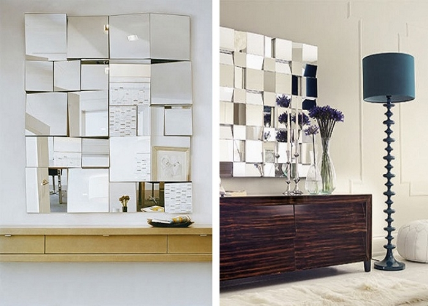
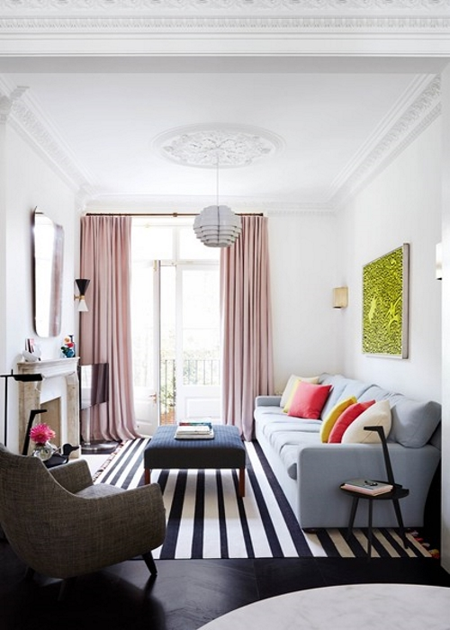
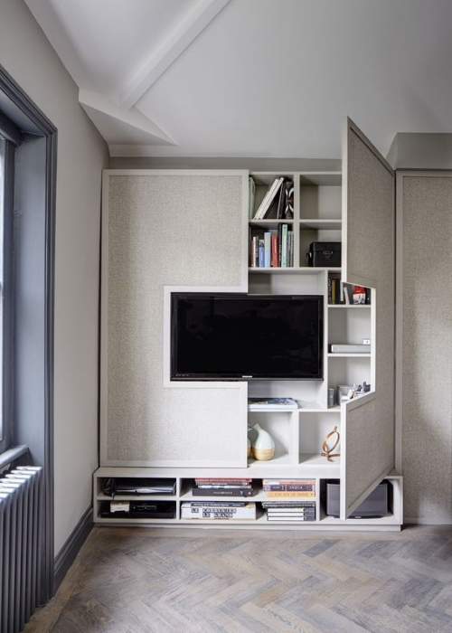

Dicas de Decoração para salas pequenas
05.02.2017 15:00 por Daiane
A sala de estar normalmente é um dos cômodos da casa onde passamos mais tempo. Por este motivo, especialmente, decorá-la aproveitando da melhor forma seu pouco espaço pode parecer um grande desafio. Como fazer sua sala pequena parecer mais espaçosa e sem gastar muito? Quais móveis escolher e como posicioná-los. Aqui você encontra dicas maravilhosas de como decorar sua sala pequena da melhor forma
Use espelhos
Não há um amigo melhor para um espaço pequeno do que um grande espelho. Expandindo uma parede, amplificando a iluminação e quebrando a desordem visual, os espelhos podem ser usados para resolver a maioria dos problemas de uma sala pequena. Se está atrás de um candelabro, de uma lâmpada pendente ou próximo à uma fonte de luz natural, um espelho vai ajudar a maximizar o alcance da luz, criando um efeito quase mágico no ambiente.
Aposte em uma boa iluminação
Pouca iluminação pode fazer uma pequena sala de estar parecer ainda menor, então é aconselhável usar e abusar do melhor e mais barato tipo de iluminação: a luz natural. Seja com o uso de janelas ou espelhos, como dito acima, procure deixar o cômodo sempre bem claro, isso dá uma sensação de emplitude e vida ao ambiente. lembre-se que móvel da TV deve receber uma iluminação indireta, que não ofusque a vista das pessoas nem reflita na tela. Se deseja um clima mais aconchegante e intimista, crie um jogo de luzes diferentes e independentes com lâmpadas de iluminação mais amarelada. Para mais informações, temos um post apenas sobre iluminação de ambientes.
Escolha os móveis certos

Preste bastante atenção nas medidas dos móveis que irão compor a decoração da sua sala. Móveis como sofá e hack devem ter pouca profundidade para não ocuparem um espaço precioso. Evite móveis nos locais de passagem de pessoas e opte por cores mais claras de madeira na hora de escolhê-los.
Utilize diversas opções de armazenamento
Você deseja relaxar em sua sala e não esbarrar em uma pilha de coisas, então use soluções inteligentes para manter sua pequena sala mais organizada. Faça cada espaço dela trabalhar ao seu favor instalando prateleiras embutidas para guardar seus livros e enfeites. Móveis com armazenamento também são essenciais: hacks, puffs e sofás com armazenamento são uma ótima solução para o problema da organização